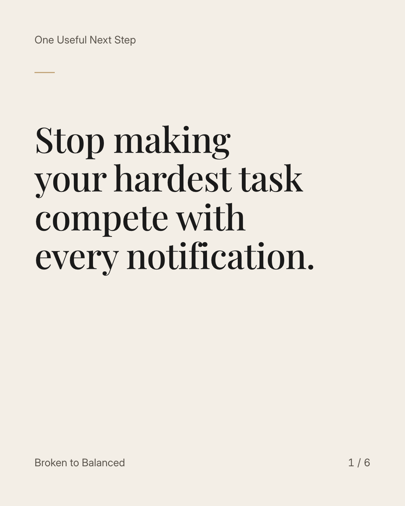
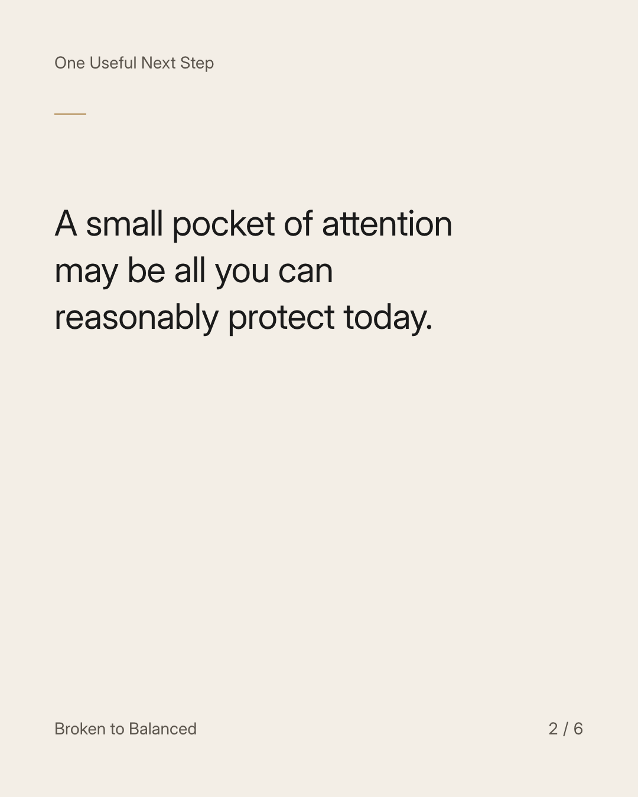
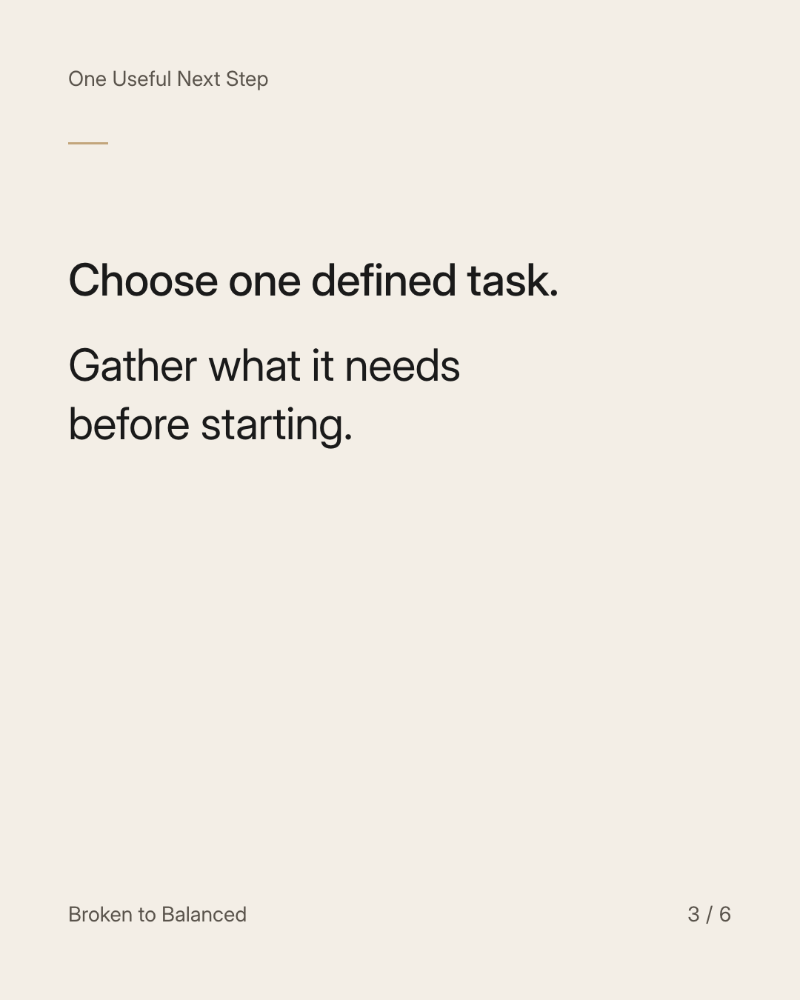
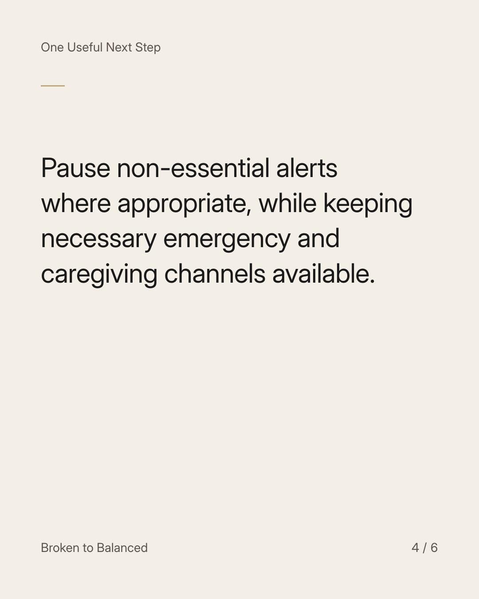
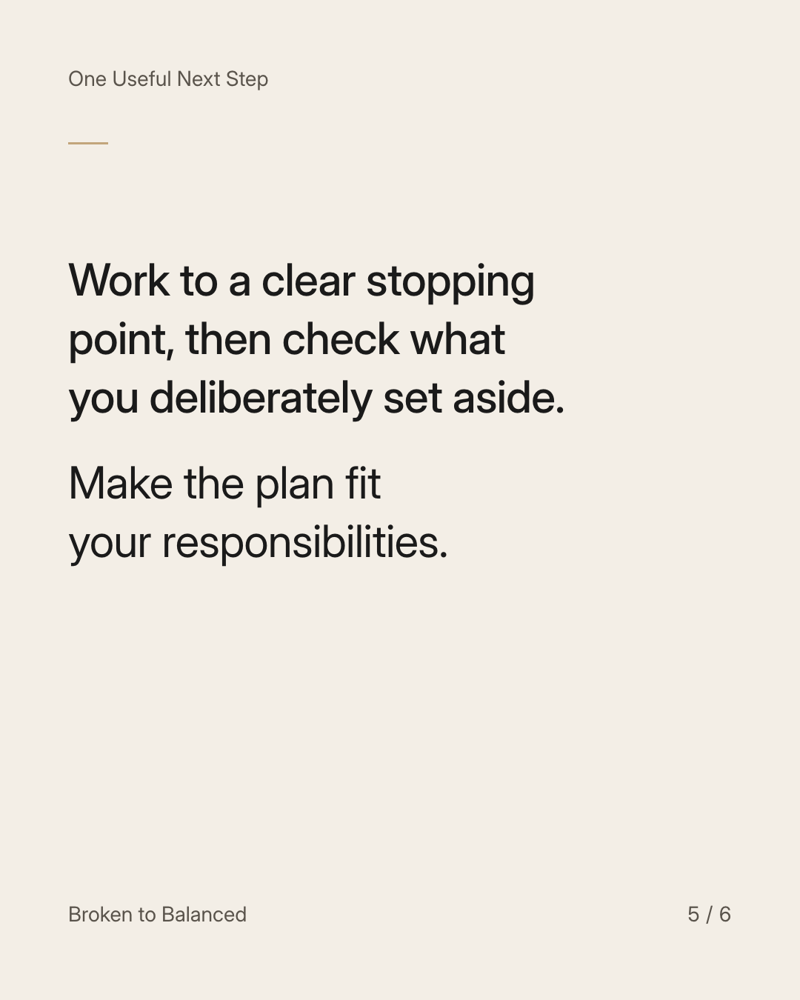
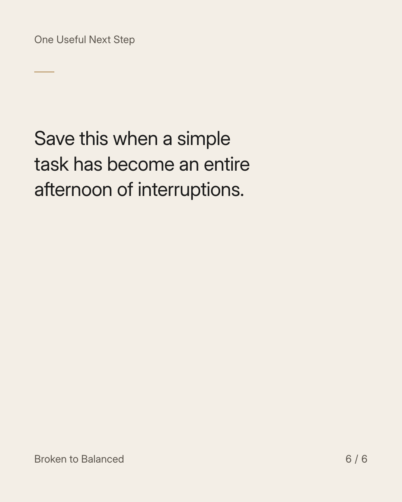

Exact text and accessibility text
Stop making your hardest task compete with every notification.
Slide 1 of 6. Stop making your hardest task compete with every notification.


Exact text and accessibility text
A small pocket of attention may be all you can reasonably protect today.
Slide 2 of 6. A small pocket of attention may be all you can reasonably protect today.


Exact text and accessibility text
Choose one defined task. Gather what it needs before starting.
Slide 3 of 6. Choose one defined task. Gather what it needs before starting.


Exact text and accessibility text
Pause non-essential alerts where appropriate, while keeping necessary emergency and caregiving channels available.
Slide 4 of 6. Pause non-essential alerts where appropriate, while keeping necessary emergency and caregiving channels available.


Exact text and accessibility text
Work to a clear stopping point, then check what you deliberately set aside. Make the plan fit your responsibilities.
Slide 5 of 6. Work to a clear stopping point, then check what you deliberately set aside. Make the plan fit your responsibilities.


Exact text and accessibility text
Save this when a simple task has become an entire afternoon of interruptions.
Slide 6 of 6. Save this when a simple task has become an entire afternoon of interruptions.
Exact caption
Plain-text fallback: select and copy the caption.